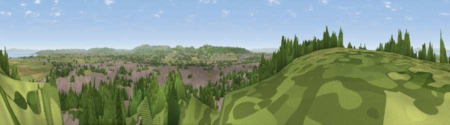

Viewpoint near Worle
#12575 in England · top 29% of its area beats it · near WorleThe view, rendered

A 360° render of this exact spot computed from the terrain model, tree cover and land cover — summer colours, afternoon light, calibrated against photographs of famous viewpoints. Real trees, hedges and buildings will differ in detail.
The panorama
Grey silhouette: terrain skyline in each direction (720 bearings, Earth curvature and refraction included). Dashed green: skyline with trees (+15 m) and buildings (+8 m) as obstacles. Blue strip: how far the ground is visible on each bearing.
Where the view opens
Wedge length = distance to the farthest visible ground on that bearing (vegetation-aware). Rings at 10, 25 and 50 km.
What fills the view
44% woodland · 36% built-up · 16% grassland · 2% cropland · 2% water
Angular shares of the visible panorama (visual magnitude), not map area. Landscape diversity 0.51 (0–1 Shannon).
Key numbers
More beautiful places nearby
The staircase of upgrades: each row has a higher view potential than everything closer. Driving times are estimates from straight-line distance, calibrated against real road routing — check an actual route before setting out.
| Place | Direction | Drive | Score |
|---|---|---|---|
| Viewpoint near Weston-super-Mare | WSW · 3 km | ~7 min | 68.9 |
| Viewpoint near Weston-super-Mare | WSW · 4 km | ~8 min | 73.9 |
| Viewpoint near Bleadon | S · 5 km | ~12 min | 77.7 |
| Bleadon Hill [Loxton Hill] | SSE · 6 km | ~13 min | 79.6 |
| Viewpoint near Holford | SW · 30 km | ~47 min | 80.8 |
| Viewpoint near East Quantoxhead | SW · 30 km | ~47 min | 83.1 |
| Viewpoint near Holford | SW · 31 km | ~48 min | 85.9 |
| Viewpoint near West Quantoxhead | SW · 31 km | ~48 min | 87.9 |
51.36481, -2.93468 · source: screening · position refined by local search. Computed location — check access rights before visiting.